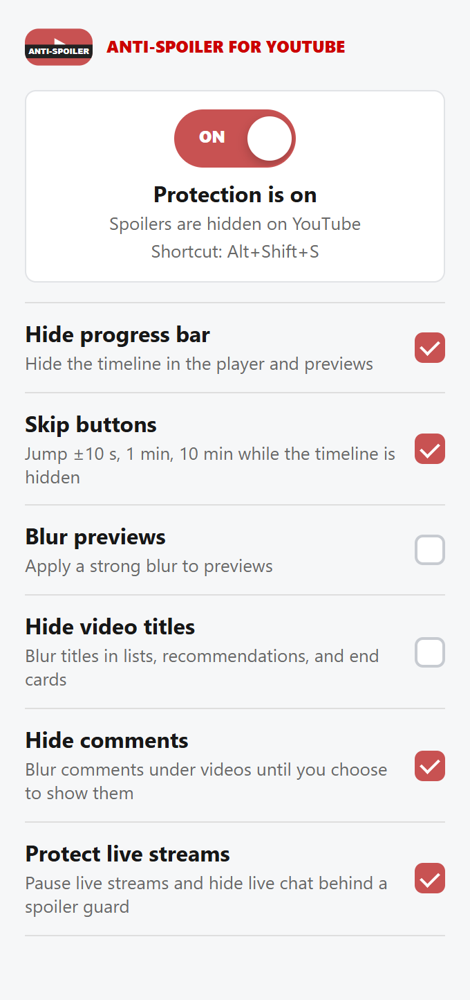
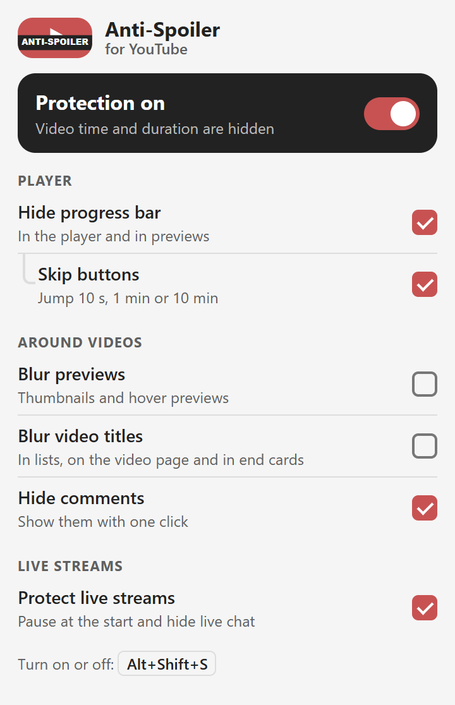
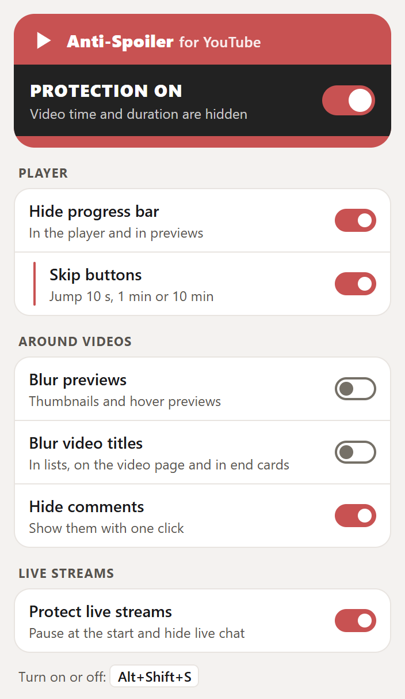
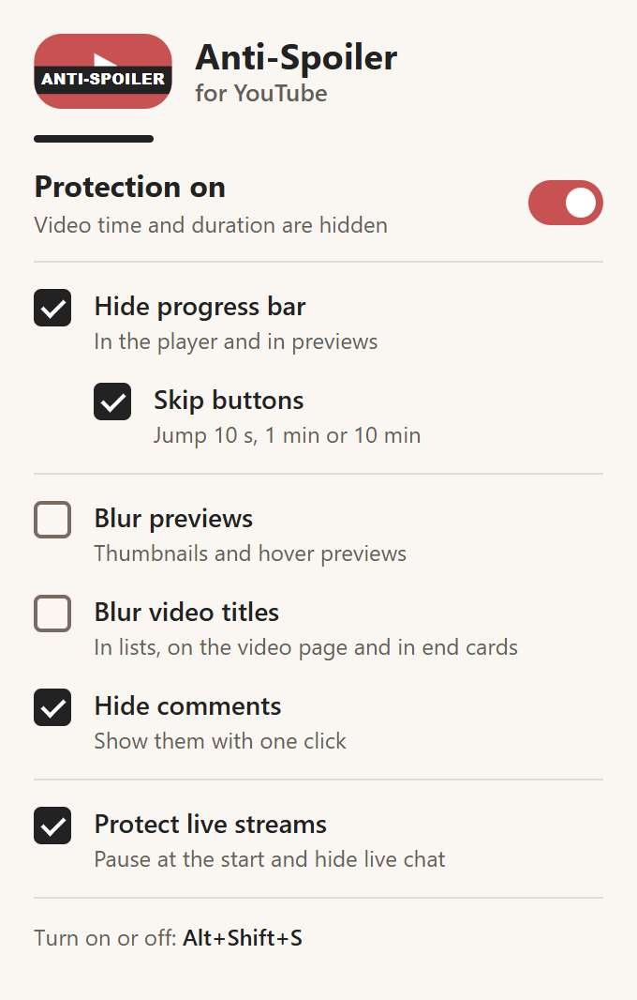

Светлая тема сверху, тёмная снизу. Логотип не меняется.
СейчасКак есть в 0.3.0

A. Полоса защитыТёмная полоса из логотипа с главным переключателем, три группы, перемотка вложена. Выбор Astra; у Argon — похожий.

B. Капсула логотипаШапка повторяет логотип целиком: красная капсула с тёмной полосой. Настройки в карточках, вместо галочек — переключатели. Выбор Argon.

C. Тихий списокМинимум оформления: тёплый фон, галочки слева, красный только в логотипе и главном переключателе.

D. ПлиткиСамый короткий: карточка плеера и 4 плитки с иконками. Хуже всего переносит длинные переводы.